Всегда закрывать от плеча до локтя. Комплексую.
Показывать. Этим горжусь.
Всегда обозначать — ремнём, корсетом, кроем.
Не обтягивать. Драпировка, свободный крой.
Странная деталь — одна. Лягушка ИЛИ шляпа ИЛИ ободок. Не всё разом.
Только под верхним слоем другого цвета.
Утюга нет. Беру только то, что не превращается в комок.
Чистый лён — только с лайфхаком пара в ванной.
Стрелками крути вещи по слоту. Собрала образ — нажми «сохранить как сет», и он останется внизу. Никакого облака, всё в памяти браузера.
24 готовых образа собрала под твою палитру, фигуру и эстетику. Клик — откроется в миксере наверху.
Из твоих 30 референсов вычленила доминанту: жилет, длинная юбка, ботинки. Под каждым пунктом — точные фото из твоей же папки рефов, чтобы понимать о чём речь.
На пуговицах. Перекрывает 7 твоих рефов сразу. Поверх любой блузы или платья. Авито: «жилет бархат винтаж», магазин Veles_second в СПб.
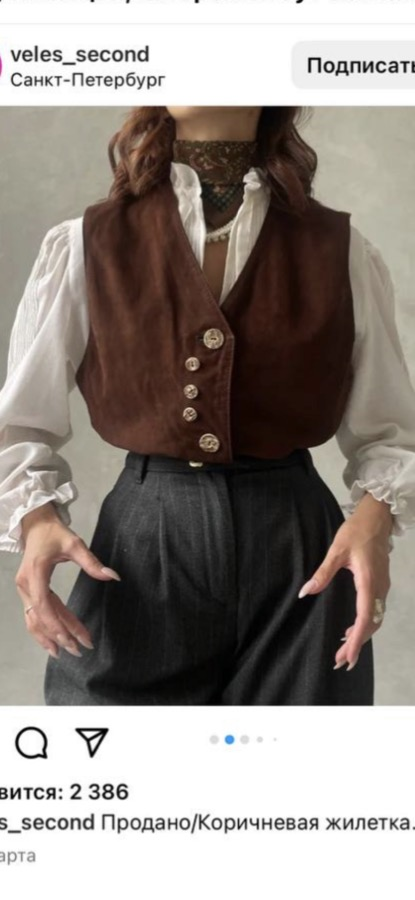
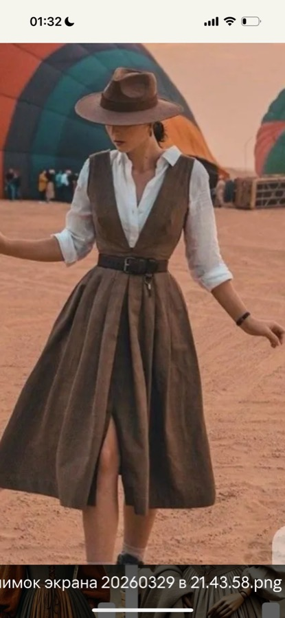
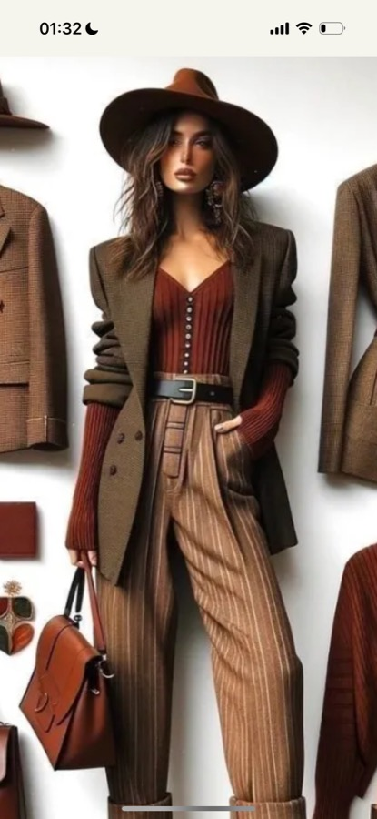
Оливковая, шалфейная или тёплый беж. Кружево, цыганка. У тебя ВСЕ юбки короткие — это главный пропуск в cottagecore. WB: «юбка цыганская ярусная», «юбка макси кружево».
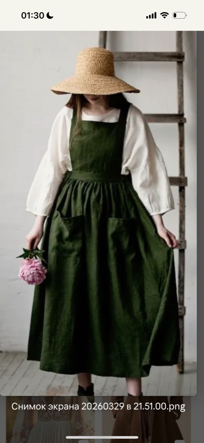
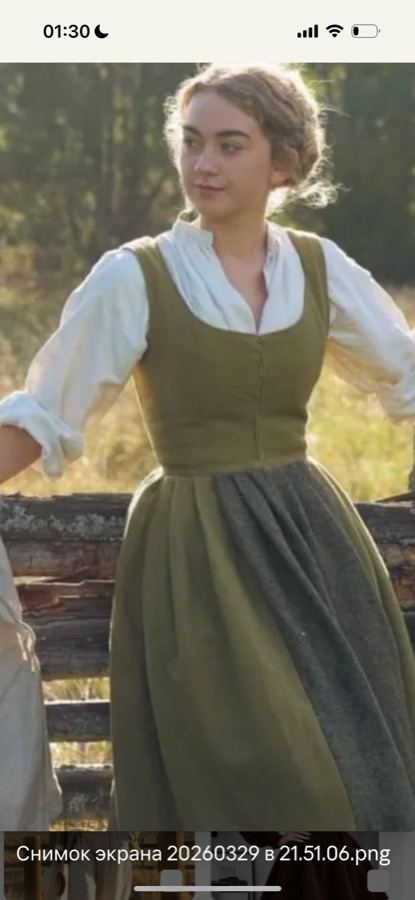
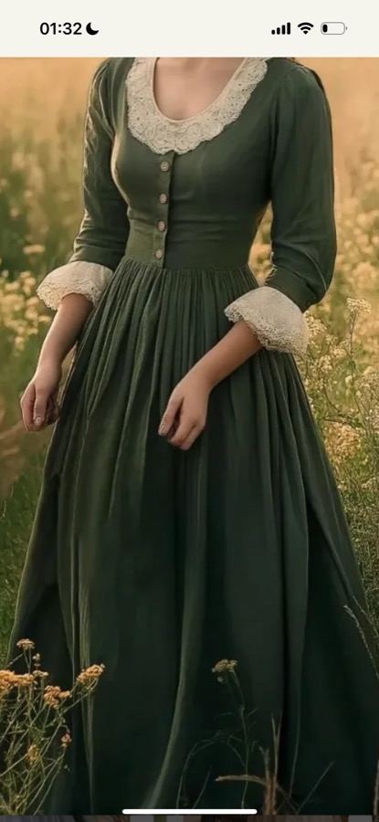
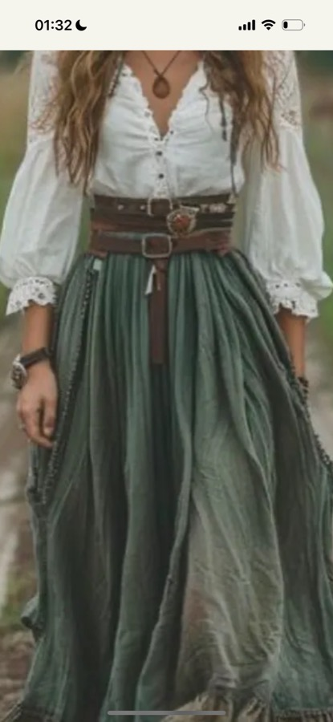
Шоколадная или тёплый беж, лён / хлопок / замша. В твоих рефах сумка появляется в каждом втором луке — без неё образ не «закрыт». В гардеробе нет повседневной сумки на каждый день. Авито: «сумка винтаж замша коричневая», «сумка тканевая бохо».
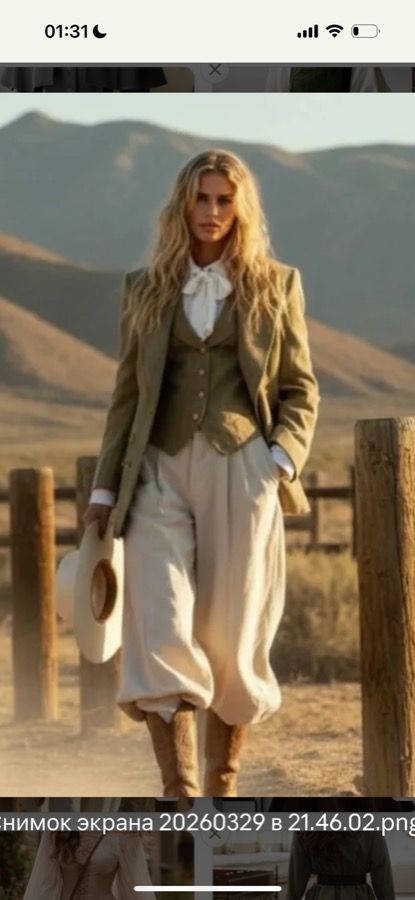
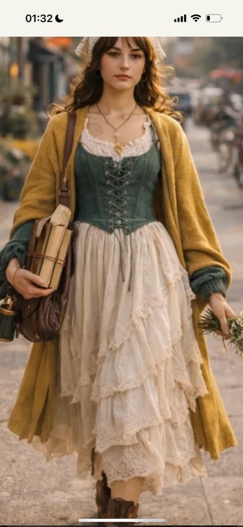
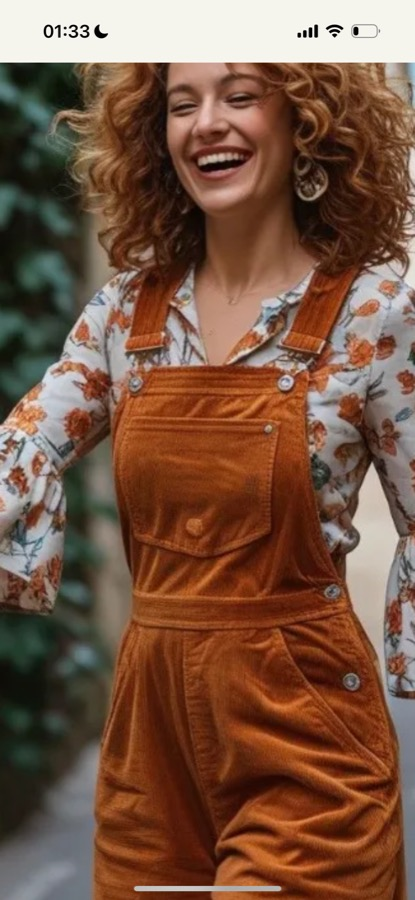
Пара к шоколадным 6729. Расширит летний низ в два раза. WB: «брюки льняные широкие бежевые», «брюки палаццо лён кремовый».
Листья, цветы, ботаника — в кремовом / оливковом / терракотовом. Заземлённый принт, не пёстрый. Один «странный» акцент на образ — рубашка может быть таким. WB: «блуза с принтом листья», «рубашка ботаническая лён».
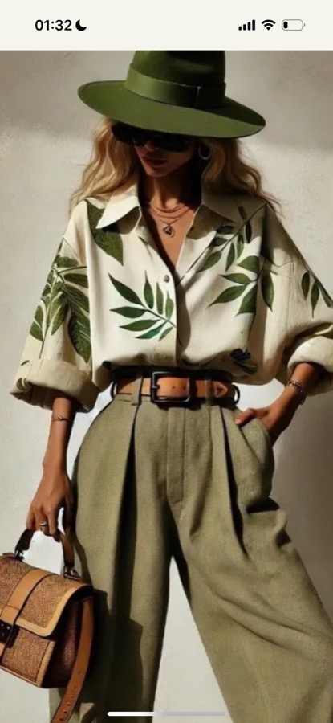
Оливковое или шоколадное. Если бюджет тянет — закроет осень-зиму в твоей эстетике. На авито «пальто капюшон винтаж шерсть».
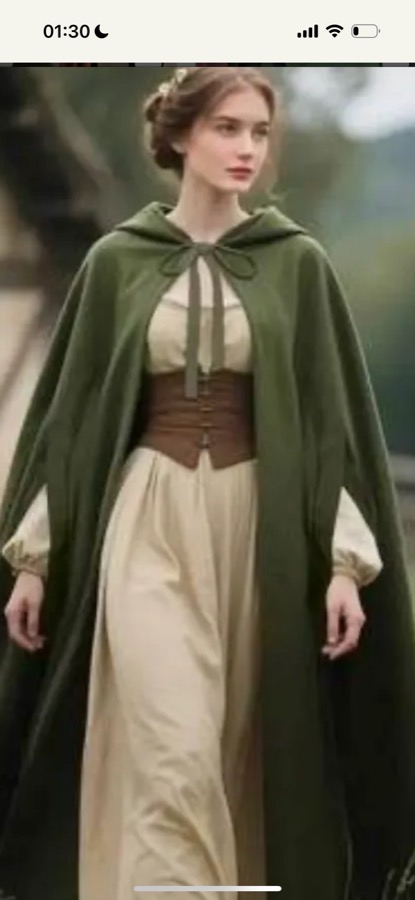
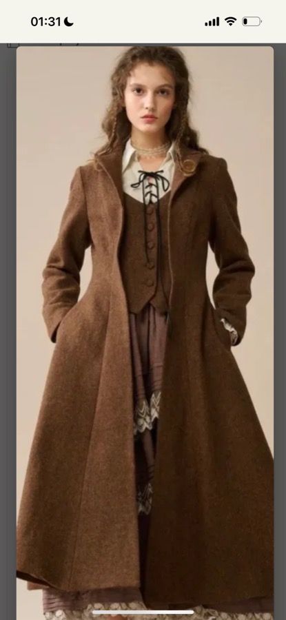
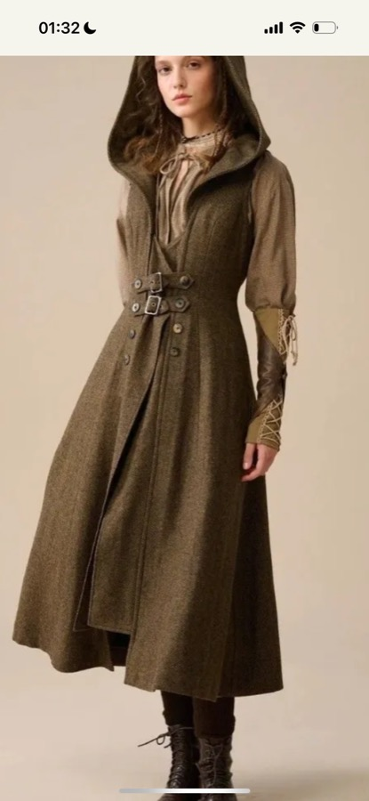
Каждая будущая покупка добавляет ≈4 новых образа к гардеробу. Здесь видно как именно. Плашка + КУПИТЬ на референсе будущей вещи, остальное — твои реальные фото.
Жилет + кремовая блуза + джинсовая мини + сандалии
Жилет + оливковая рубашка + шоколадные брюки + терракотовая шляпа
Жилет поверх терракотового платья — историчный силуэт
Жилет + шоколадная водолазка + шоколадные брюки + ремень
Юбка + кремовая блуза + молочный корсет + лисичка
Юбка + оливковая рубашка + ремень + бежевая шляпа
Юбка + шоколадная водолазка + ремень + терракотовая шляпа
Юбка + рубашка в полоску + соломенная шляпа + лягушка
Сумка + терракотовое в пол + бежевая шляпа = ивент-день
Сумка + оливковая рубашка + шоколадные брюки + ремень = смарт-кэжуал
Сумка + светло-оливковый комбез + ободок-лисичка = прогулка
Сумка + кремовая блуза с оборками + шорты + ремень = пикник
Кремовые брюки + кремовая блуза + ремень + жемчужный ободок
Кремовые + шоколадная водолазка + терракотовая шляпа
Кремовые + клетчатая рубашка + бежевая шляпа
Принт-блуза + шоколадные брюки + ремень + бежевая шляпа = сафари-смарт
Принт-блуза + джинсовые шорты + ремень + лягушка = бохо-кэжуал
Принт-блуза под светло-оливковый комбез + кепка с белкой = деревенский
Овальное лицо + Soft Autumn + ты любишь круглые. Подходящих форм три. Главное — линзы с честной UV-защитой, иначе тёмные очки только вредят (зрачок расширяется, ультрафиолет залетает сильнее).
Слегка приподнятые уголки. Винтаж 50-х, идёт твоему Soft Natural и обыгрывает овал лица. Оправа: черепаховая или шоколадная.
Твоя проверенная форма — на фото в них постоянно. Бери не маленькие Леннон, а средние, чтобы не утяжелить нижнюю часть лица. Шоколад / черепаха.
Классическая трапеция, как Ray-Ban. Подойдёт под джинсовое и сафари-сетапы. Оправа коричневая или тёплый беж.
Маркировка обязательна. Блокирует и UVA, и UVB до 400 нм. Без неё — это не очки, а аксессуар, который вредит глазам.
Для яркого солнца (Грузия, море). Категория 2 — для города. Категория 4 — горы, снег, ослепляет в городе.
Снимает блики от воды, машин, асфальта. В Грузии и у моря — нужна. Метка «polarized» на упаковке.
Без маркировки UV. Светлые «прозрачные» линзы как солнечные. Голубые / розовые / зеркальные радужные — искажают цвет и не в твоей палитре.
11 вещей + одна пара обуви = минимум 15 разных образов. Один цвет-стержень (шоколад) + один акцент (терракот) + натуральные ткани. Всё сочетается между собой.
Чашка с косточками С/D на твою грудь, широкие бретели. Тонкие будут впиваться. Никаких треугольников без поддержки.
Как твои любимые шорты. Прикрывает бока, обозначает талию. Может с оборкой или поясом. НЕ стринги — на груше не работает.
Силуэт получится «пин-ап 50-х» — твой Soft Natural в любимом виде.
Глубокий V-вырез или квадратный, оборка по линии бёдер, цвет бордо или шоколад. Закроет живот, обозначит талию.
Чёрный или белый прямо у лица без буфера другого цвета.
Узкий носок и жёсткая подошва. Даже если силуэтно подходит.
Каблуки. Никаких.
Открытые плечи + открытые руки одновременно.
Обтяжка по животу. Никогда.
Холодный голубой/серый/лиловый/неон у лица.
Два «странных» акцента в одном образе.